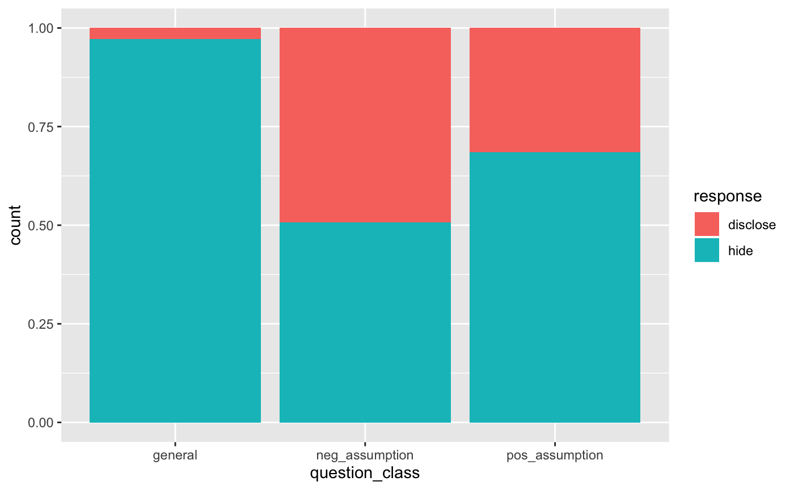

Something is wrong with this data set. In this experiment, each individual was asked to be a seller of an iPod (a product commonly used to store music on before smart phones...). They participant received $10 + 5% of the sale price for participating. The iPod they were selling had frozen twice in the past inexplicably but otherwise worked fine. The prospective buyer starts off and then asks one of three final questions, depending on the seller's treatment group.
ask
A data frame with 219 observations on the following 3 variables.
The type of question: `general`, `pos_assumption`, and `neg_assumption`.
The question corresponding to the `question.class`
The classified response from the seller, either `disclose` or `hide`.
Minson JA, Ruedy NE, Schweitzer ME. There *is* such a thing as a stupid question: Question disclosure in strategic communication.
The three possible questions: - General: What can you tell me about it? - Positive Assumption: It doesn't have any problems, does it? - Negative Assumption: What problems does it have?
The outcome variable is whether or not the participant discloses or hides the problem with the iPod.
library(dplyr) library(ggplot2) # Distribution of responses based on question type ask %>% count(question_class, response)#> # A tibble: 6 x 3 #> question_class response n #> <chr> <chr> <int> #> 1 general disclose 2 #> 2 general hide 71 #> 3 neg_assumption disclose 36 #> 4 neg_assumption hide 37 #> 5 pos_assumption disclose 23 #> 6 pos_assumption hide 50# Visualize relative frequencies of responses based on question type ggplot(ask, aes(x = question_class, fill = response)) + geom_bar(position = "fill")#> #> Pearson's Chi-squared test #> #> data: table(ask$question_class, ask$response) #> X-squared = 40.128, df = 2, p-value = 1.933e-09 #># Check the test's assumption around sufficient expected observations # per table cell. test$expected#> #> disclose hide #> general 20.33333 52.66667 #> neg_assumption 20.33333 52.66667 #> pos_assumption 20.33333 52.66667